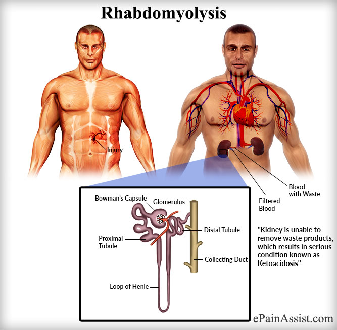

Rhabdomyolysis

SYMPTOMS:
Rhabdomyolysis symptoms can range from mild to severe. Symptoms usually develop one to three days after the muscle injury, though some people may not even notice muscle soreness. The main signs of rhabdomyolysis include:
- Muscle swelling.
-
Weak, tender and sore muscles.
-
Dark urine that is brown, red or tea-colored.
DIAGNOSIS
To diagnose rhabdomyolysis, your doctor will:
- Examine you and ask about recent physical activity, prescription medications, and alcohol or drug use.
-
Order a urine test to check the levels of myoglobin in your urine.
-
Take a sample of your blood to measure levels of creatnine kinase, a protein that muscles release when they disintegrate.
TREATMENT
Treatments include:
- To treat rhabdomyolysis, your doctor will first give you fluids and electrolytes intravenously (through a vein). These IV fluids flush the toxins from your system. You may need to stay in the hospital for a few days. After treatment, physical therapy can help you strengthen your muscles after an initial period of rest.
-
If the rhabdomyolysis is severe enough to cause kidney damage, you may need dialysis. Dialysis extracts (removes) some of your blood, takes out toxins, and returns the filtered blood.